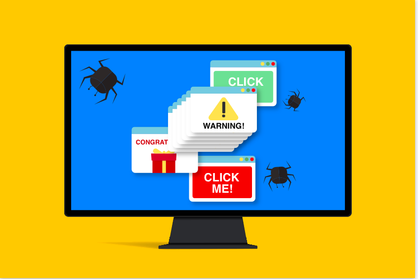

Keylogger
A keylogger records every keystroke made by the user. See how attackers can track sensitive information.
Try KeyloggerFake Form
Fake forms can steal personal information like passwords. Learn how to spot malicious forms.
Try Fake Form

Adware
Adware can forcefully display unwanted advertisements. Understand how these ads can be harmful.
Try AdwareMalicious File Downloader
Malicious file downloaders trick users into downloading harmful files. Learn the risks of downloading unknown files.
Try Malicious File